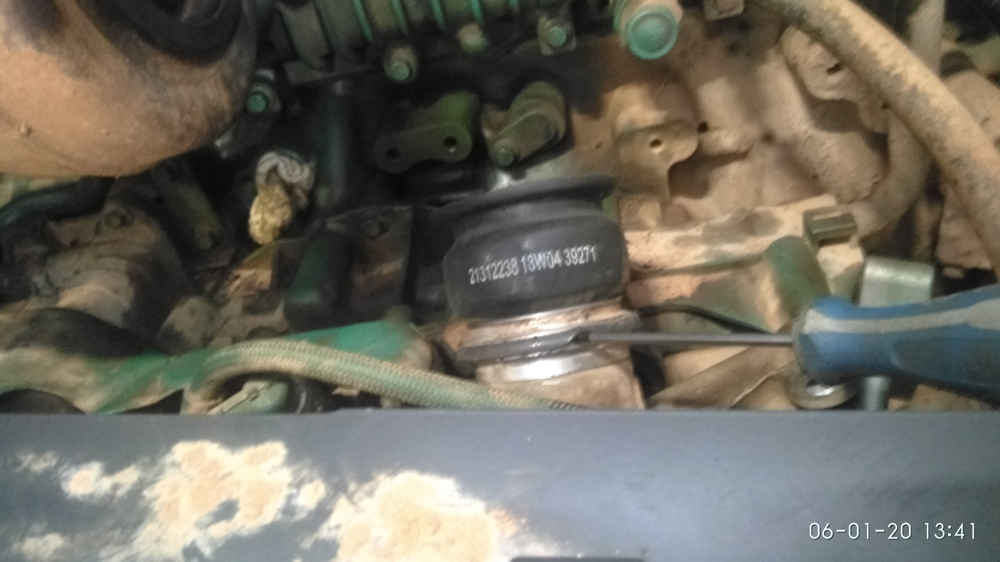

Реклама
Диагностика и устранение утечки масла с блока двигателя. Сторона турбокомпрессора.
Инструмент:
- Отвёртка, молоток, лёгкая кувалда, стамеска или большая отвёртка, маркер.
- Ключи и головки:
*8, *10, *11, *14, *22, Звёздочка *30 - Специальная термостойкая смазка VOLVO
Поиск утечки масла в двигателе:
Порядок действий:
- Поднять кабину.
- Снять рукав от воздушного фильтра к турбине. Смотреть картинку
- Снять резиновый патрубок с турбины на интеркуллер. Подцепить отверткой как на картинке. Смотреть картинку
- Снять трубку подачи масла к турбине. Смотреть картинку
- Снять трубку отвода масла от турбины. Смотреть картинку.
- Открутить три болта на кронштейне цилиндра управления воздушной заслонкой и отвести его в сторону. Смотреть картинку
- Снять турбину и затем открутить и снять коллектор Смотреть картинку
- Дальние нижние гайки крепления турбины труднодоступны. Если нет возможности их открутить, снять коллектор вместе с турбиной.
Смотреть картинку - Заменить резиновые кольца, уплотнения на трубках подачи, слива масла. Смотреть картинку Найти кольца Здесь
- Разобрать выпускной коллектор. Смотреть картинку Предварительно поставить метки маркером на местах посадки одной части в коллектора в другой и по осевому смещению. Заменить уплотнения в коллекторе. Номер детали: 21475172; Смотреть картинку
- Собрать коллектор.
- Опускаем кабину.
Полезные ссылки по теме:
VOLVO FM-13 Регулировка клапанов, насос-форсунок.
